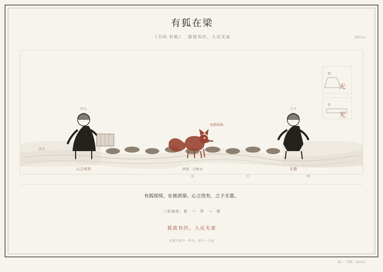
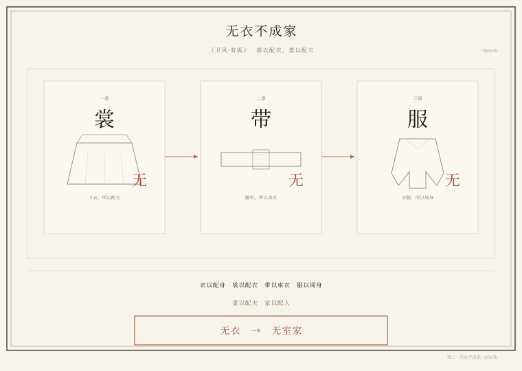

第六十三篇 有狐
卫风 · 之九 SJ063
朗读 · 普通话
依经文原文朗读，章次不读出；配古琴底乐，不改速、不加拖腔。全库同一音色（豆包 TTS），非播音员录制。
一 解题
诗三判：
- 谁在说：一个寡妇，或一个失了配偶的妇人。她看见淇水边一个没有室家的男子，忧他没有衣裳；她想为他作裳，想与他成家。
- 说什么事：狐在淇水的梁、厉、侧三处求匹；她心里忧愁，那个人没有下裳、没有腰带、没有衣服。三章从一件下衣，写到一身衣裳，缺口越来越大。
- 为何编在此：卫风第九。前《伯兮》写「有夫而不得见」，此篇写「无夫而不得嫁」；一个被久役拖住，一个被贫穷与失时拖住。卫风从「役」写到「贫」，从「等归」写到「无家」。
《毛序》：「《有狐》，刺时也。卫之男女失时，丧其妃耦焉。古者国有凶荒，则杀礼而多昏，会男女之无夫家者，所以育人民也。」
郑笺：「之子，是子也。时妇人丧其妃耦，寡而忧是子无裳。无为作裳者，欲与为室家。」
朱子《诗集传》：「比也。狐者，妖媚之兽。绥绥，独行求匹之貌。石绝水曰梁。在梁则可以裳矣。国乱民散，丧其妃耦，有寡妇见鳏夫而欲嫁之，故托言有狐独行而忧其无裳也。」
本库的看法：《有狐》是一首「无衣不能成家」的诗。
狐在淇水边求匹，人却连一件衣裳都没有；狐犹有匹，人反无家。它不是艳情，也不是「狐狸精」的故事；它写的是国乱民贫之后，男女错过婚龄、鳏寡无处成家的处境。「无裳」不只是少一件下衣，是少一个家。
先辨三物：绥绥，不是「安顺」；毛传读「匹行」，朱子读「独行求匹」，两读都指向「求匹」。梁，不是房梁，是淇水上「石绝水」的鱼梁、石梁。裳，不是上衣，是下衣、裙。
二 经文
第一章
有狐绥绥，在彼淇梁。心之忧矣，之子无裳。
第二章
有狐绥绥，在彼淇厉。心之忧矣，之子无带。
第三章
有狐绥绥，在彼淇侧。心之忧矣，之子无服。
分章：三章，章四句。
三 韵读
| 一 |
梁、裳 |
阳 |
| 二 |
厉、带 |
祭、泰（通押） |
| 三 |
侧、服 |
职（服，蒲北反） |
三章各一韵，章章换韵；二章「厉、带」祭泰通押，三章「侧、服」入职。韵脚短，句子也短；三章下来，像三句反复的追问。
四 字义与名物
字义
- 狐——狐狸。朱子说是「妖媚之兽」，取它求匹的样子作比；毛传只取「匹行」，不把狐读成「狐狸精」。
- 绥绥——毛传「匹行貌」，成对而行；朱子「独行求匹之貌」，独行求偶。两读相反，但都落在「匹」上；本库取「求匹而行」，不强行合一。
- 淇——淇水，卫地之水。
- 梁——石绝水曰梁；横石拦水、可以行走的鱼梁、石梁。不是房梁。
- 厉——深可厉之旁；深水可以涉过的地方。不是「厉害」。
- 侧——水旁、岸边。不是「侧面」。
- 心之忧矣——心里忧愁；「忧」是挂念、心疼，不是「怨恨」。
- 之子——那个人；毛传「无室家者」，郑笺「是子」，朱子指「鳏夫」。不是「儿子」。
- 裳——下衣、裙；「在下曰裳，所以配衣」。
- 带——腰带；「带，所以申束衣」。
- 服——衣服；「言无室家，若人无衣服」。
- 妃耦——配偶；妃通「配」。「丧其妃耦」是失去配偶、没有配偶。
- 失时——错过婚龄；孔疏「失男女年盛之时，不得早为室家」，不是「失去时机」。
- 杀礼——减杀婚礼，简化婚仪；不是「杀」人。
- 多昏——多婚，鼓励成婚；「昏」通「婚」。
- 会——会合；「会男女之无夫家者」，使没有配偶的男女相会。
- 育人民——生育人口；「育，生长也」。
- 寡／鳏——寡妇／鳏夫；朱子说「寡妇见鳏夫而欲嫁之」。
- 无衣——没有衣服；在这里不只是贫穷，也是「无室家」的隐喻。
名物
- 狐——求匹之兽；在淇水边行走。
- 淇梁——淇水上横石拦水的梁；狐行其上。
- 厉——深水可涉处；比梁更近水。
- 侧——水边；比厉更靠岸。
- 裳——下衣；配衣之物。
- 带——腰带；束衣之物。
- 服——周身衣服；成家之喻。
五 今译
第一章
狐狸求偶，慢慢地走在淇水的石梁上。我心里忧愁，那个人没有下裳。
第二章
狐狸求偶，慢慢地走在淇水的深水边。我心里忧愁，那个人没有腰带。
第三章
狐狸求偶，慢慢地走在淇水岸边。我心里忧愁，那个人没有衣服。
说明：「绥绥」今译作「求偶，慢慢地走」，取「求匹」一读；「梁」今译作「石梁」；「厉」今译作「深水边」；「裳」今译作「下裳」；「带」今译作「腰带」；「服」今译作「衣服」。
六 章旨
一章：狐在梁。
梁是石绝水的地方，狐可以在上面走；「有狐绥绥」先写狐有匹、狐求匹；「心之忧矣，之子无裳」转到人：那个人连下裳都没有。狐与人，一有匹，一无家。
二章：狐在厉。
厉是深水可涉处，比梁更近水；「无带」比「无裳」更贴身处：先缺下衣，再缺腰带。忧不止，地点也换。
三章：狐在侧。
侧是水边，比厉更靠岸；「无服」是周身无衣，比「无裳」「无带」更大。三章从一件下衣，写到一条腰带，写到一身衣裳；从「缺一件」写到「全无」。
三章合看：狐犹有匹，人反无家。
狐在淇水边求匹，人在淇水边无衣；无衣则无以为家。郑笺说「欲与为室家」，朱子说「寡妇见鳏夫而欲嫁之」；这诗不是写艳情，是写贫与失时。
七 诗教
- 比与兴：毛传标「兴也」，朱子标「比也」。毛读「绥绥」为「匹行」，狐有匹而人无匹，是反衬；朱读「独行求匹」，狐求匹而人不得，是比喻。两读都通，本库取「比」为主，保留「兴」。
- 观：观「贫」——不是没有衣冠，是连下裳、腰带都没有；观「失时」——男女错过婚龄，鳏寡无家；观「衣裳」如何成为婚姻的象征——裳配衣，妻配夫，无衣即无家。
- 群：可与鳏寡孤独同群，与贫不能婚者同群，与一切「想成家而不得」的人同群。诗里的「忧」不是旁观者的怜悯，是当事人想为他作裳的心。
- 怨：这首诗几乎没有「怨」字，只有「忧」。毛序说「刺时」，刺的是卫君不修荒政、不使男女及时成婚；怨在「忧」里，不在字面。
八 分寸与边界
- 不可把「狐」当「狐狸精」。朱子说「妖媚之兽」，是取它求匹的样子作比；不是说这诗写妖淫。
- 不可把「绥绥」读成「安顺」。毛传「匹行貌」，朱子「独行求匹之貌」；两读都不是「绥绥然安和」。
- 不可把「梁」当房梁。石绝水曰梁，是淇水上的石梁、鱼梁。
- 不可把「厉」当「厉害」。厉是深可厉之旁，深水可涉处。
- 不可把「侧」当「侧面」。侧是水旁、岸边。
- 不可把「裳」当上衣。裳是下衣、裙；「在下曰裳」。
- 不可把「带」当「带领」。带是腰带，所以束衣。
- 不可把「服」当「服从」。服是衣服；「无服」是周身无衣。
- 不可把「之子」当「儿子」。之子是那个人、无室家者；朱子指鳏夫。
- 不可把「无裳」只当「少一件衣服」。它实写贫穷，也隐喻无室家；郑笺「欲与为作裳」，就是「欲与为室家」。
九 存疑
- 诗旨与作者：毛序「刺时」，谓卫之男女失时、丧其妃耦；朱子谓国乱民散，寡妇见鳏夫而欲嫁之；现代多读悯贫、婚嫁失时。本库取「刺时＋悯贫＋失时」三层；作者是寡妇自作，还是诗人代其口吻，无确证。
- 「绥绥」：毛传「匹行貌」，朱子「独行求匹之貌」。一说是成对而行，一说是独行求匹；两读相反，但都落在「匹」。本库不强行合一，取「求匹」为通。
- 兴与比：毛传标「兴也」，朱子标「比也」。毛以狐有匹反衬人无匹，朱以狐求匹比喻人求匹；两读都通，本库取「比」为主，保留「兴」。
- 「之子」：毛传「无室家者」，郑笺「是子」，朱子指「鳏夫」。都指男子，但诗未明言；本库从郑、朱，读为「那个人」。
- 「狐」：朱子「妖媚之兽」，毛传不取妖媚，只取「匹行」。本库取「求匹」，不取「狐狸精」。
- 「梁、厉、侧」：淇水三处，从石梁到深水边到岸旁；具体地点无确证，不必坐实。
- 「无裳、无带、无服」：实写贫穷，还是隐喻无室家？本库两存，以「无室家」为主，不废实写。
- 时代：毛序说卫之男女失时，古者凶荒杀礼多昏；具体凶荒、年代无确证。
- 「杀礼多昏」：古制见《周礼·大司徒》荒政「多昏」；卫当时是否行此礼，诗无明文，序说「刺今不然」。
十 跨典
- 《召南·摽有梅》：「求我庶士，迨其吉兮。」写男女及时；《有狐》写男女失时。一求早，一叹晚。
- 《秦风·无衣》：「岂曰无衣？与子同袍。」同是「无衣」，一为同仇共袍，一为贫不能婚；同一语，两样情。
- 《豳风·七月》：「无衣无褐，何以卒岁。」写贫而无衣；《有狐》把「无衣」写成「无家」。
- 《卫风·氓》：「抱布贸丝。」有媒有礼，尚且终弃；《有狐》连衣裳都没有，连礼都谈不上。
- 《周南·关雎》：「窈窕淑女，君子好逑。」写求偶之正；《有狐》写求匹而贫，求而不得。
- 《周礼·大司徒》：荒政十有二，「十曰多昏」；古者凶荒减礼而多婚。《有狐》所刺，正是今不然。
十一 双卡与图
双卡八对：
| 绥绥（匹行／独行求匹） |
绥绥（安顺，误） |
| 梁（淇水石梁／鱼梁） |
梁（房梁，误） |
| 厉（深可涉处） |
厉（厉害，误） |
| 侧（水旁） |
侧（侧面，误） |
| 裳（下衣） |
裳（上衣，误） |
| 带（腰带） |
带（带领，误） |
| 服（衣服） |
服（服从，误） |
| 之子（无室家者） |
之子（儿子，误） |

图一 · 有狐绥绥，在彼淇梁；之子无裳 场景图

图二 · 裳—带—服：无衣不成家 义理图
读图三处：
- 狐：图一，狐在淇水石梁上求匹；狐有匹，人无家。
- 裳：图一，妇人手里的一块布，是为「之子」作裳的起点；无裳不是少一件衣，是少一个家。
- 三件：图二，裳配衣、带束衣、服周身；三件皆无，便成「无室家」。